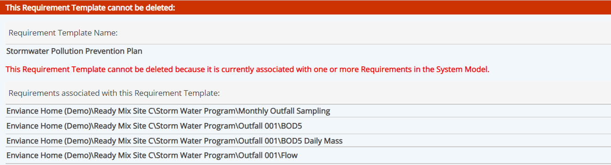

Templates that are currently associated with objects cannot be deleted, in order to preserve any data stored with that template.
The #Ref column shows the number of times a field or template is used. When the Ref column shows associations, It is possible to view the dependent objects by initiating a delete, which will not be allowed, but will give you a list of associations.
To delete a template:
In the corresponding templates library, right click the template and choose Delete.
A confirmation message appears. Select Delete again to confirm the deletion, or Cancel to keep the template.
If the template is in use, you will not be allowed to delete the template. A message will appear telling you that it is associated with one or more objects. The associated objects will be listed.
